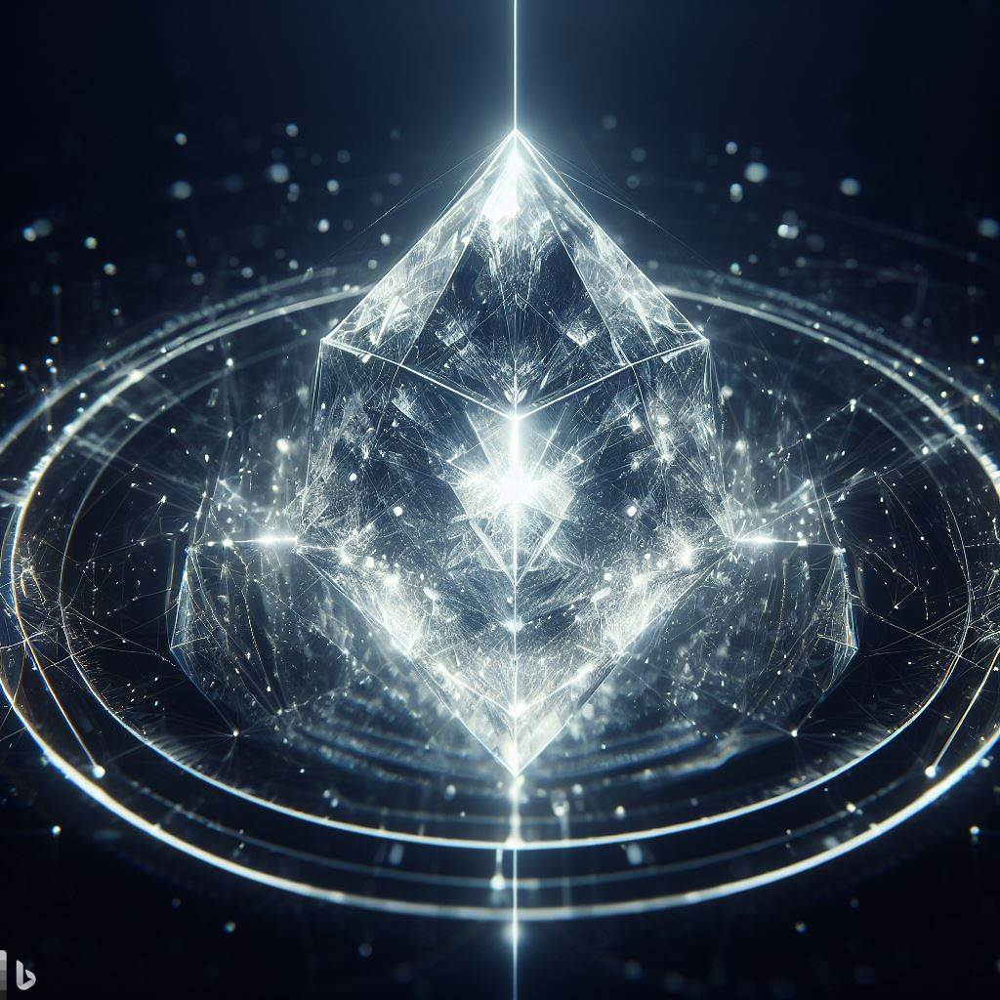
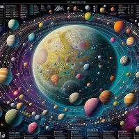
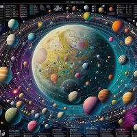

Adonalsium and the Shattering
Adonalsium is a central and enigmatic concept within Brandon Sanderson's Cosmere universe. It is the name given to an all-encompassing, god-like force that existed before the Shattering. The Shattering was an event where a group of individuals, known as the Shards, somehow separated Adonalsium into sixteen distinct, powerful Shards, each representing a particular aspect or intent. These Shards were then taken up by different individuals, turning them into god-like beings themselves, each with their own unique magical powers and motivations.
The Shards
Scadrial
Preservation: This shard is associated with the planet Scadrial and is responsible for the magic system known as Allomancy. It's primarily concerned with maintaining the balance and staving off Ruin.
Ruin: Also associated with Scadrial, Ruin represents the destructive aspect of the universe. The conflict between Preservation and Ruin is central to the Mistborn series.
Roshar
Odium: The shard of Odium is tied to the planet Roshar and plays a central role in "The Stormlight Archive. Odium is known for its intense hatred and is a powerful and malevolent force in the Cosmere."
Cultivation: Another shard on Roshar, Cultivation is associated with growth, change, and adaptation. It is often in opposition to Odium's destructive tendencies.
Honor: The shard of Honor was present on Roshar, but its holder was killed, leading to its power becoming splintered. It left behind the remnants of the Honorblades and the Nahel bond spren.
Sel
Devotion: This shard was present on the world of Sel, where the magic system of AonDor is practiced. Devotion's holder was killed, leading to its power's fragmentation.
Dominion: Like Devotion, Dominion was also on Sel, and its holder was killed, leading to its power's fragmentation.
The rest of the Cosmere
Autonomy: Autonomy is a mysterious shard associated with the planet Taldain. It is known for its desire to control and influence various worlds and is a source of tension in the Cosmere.
Endowment: The shard Endowment is found on the world of Nalthis and is responsible for the magic system of Awakening. It grants people the power to animate objects with their Breath.
Ambition: Ambition was once held by a being named Uli Da, but she was killed, leading to its power becoming splintered. Not much is known about this shard.
Whimsy: Little is known about Whimsy, except that it is a shard on the world of Threnody.
Valor: Similar to Whimsy, little is known about Valor, except that it is a shard on the world of Threnody.
Mercy: Mercy is another shard on Threnody and, like Whimsy and Valor, is not well-documented.
Invention: This shard is on the planet of Patji and is associated with the events in the novella "Sixth of the Dusk." It's a lesser-known shard in the Cosmere.
Wisdom: Little is known about Wisdom, except that it is a shard on the planet First of the Sun, which is featured in the novella "Sixth of the Dusk."
 
